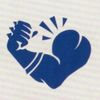
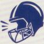
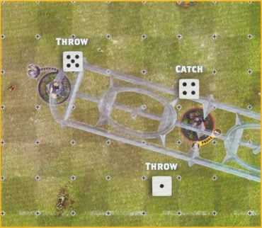

Skills & Traits
SKILLS!
Generally speaking, Skills are those abilities a player is able to learn through practice, hard work and sometimes even natural talent. They are the result of hours of the player's dedication on the pitch and the player listening to their coach's tutelage and wisdom - which, given that this is Blood Bowl, doesn't happen as often as it should!
All players will have access to a number of Skill categories as outlined in their profile. Some of these will be listed under Primary, which are the Skills that come more naturally to the player in question, whilst others are listed under Secondary and are those that will take a greater investment of SPP for that player. Not every player will have access to every Skill category.
How players gain new Skills in League play is explained on page 97.
For example: A Tomb Kings Blitzer has G and S listed under Primary, and A and D under Secondary. This means they have access to General and Strength Skills as Primary, and Agility and Devious Skills as Secondary.
Skills are denoted by a symbol showing which category they belong to - either Agility, Devious, General, Mutation, Passing or Strength. These symbols are shown below:
 AGILITY SKILL
AGILITY SKILL
 DEVIOUS SKILL
DEVIOUS SKILL
 GENERAL SKILL
GENERAL SKILL
MUTATION SKILL
PASSING SKILL
 STRENGTH SKILL
Additionally, an Elite Skill will be denoted by the symbol.
SKILL USE
It is important to know when a player is able to use their Skills during the course of a game. Each Skill will be defined as either Active or Passive.
An Active Skill can be used by a player at any time, so long as they are Standing and are not Distracted. If an Active Skill can be used by a player that is Prone, Stunned or Distracted, then it will be stated in that Skill's description. If an Active Skill allows a player to declare a Special Action, then they may still declare the Special Action whilst Prone, so long as the Special Action allows them to first make a free Move Action to use the Special Action.
A Passive Skill is one that is always in effect, regardless of the status of the player or if they are Distracted.
Players do not have to use a Skill if they do not wish to; their use is optional. However, if a Skill is marked with an asterisk (*) then the player must always use the Skill when applicable.
If a Skill modifies a dice roll, then this modifier can be applied after the dice is rolled. Any bonuses and modifiers applied from Skills and Traits can be combined.
Unless the Skill states otherwise, multiple players can use the same Skill during the same Turn and a player can use the same Skill multiple times during their team's Turn.
SKILL TABLE
Below is the full list of the different Skills and the categories they are in. When randomly selecting a Skill for a player, first choose one of the eligible Skill categories for that player and then roll two D6s, one after the other. The first dice will determine which half of the table you are rolling in, and the second roll will determine which Skill is selected.
| 1ST D6 | 2ND D6 | AGILITY | DEVIOUS | GENERAL | MUTATION | PASSING | STRENGTH |
|---|---|---|---|---|---|---|---|
| 1‑3 | 1 | Catch | Dirty Player | Block | Big Hand | Accurate | Arm Bar |
| 1‑3 | 2 | Diving Catch | Eye Gouge | Dauntless | Claws | Cannoneer | Brawler |
| 1‑3 | 3 | Diving Tackle | Fumblerooski | Fend | Disturbing Presence* | Cloud Burster | Break Tackle |
| 1‑3 | 4 | Dodge | Lethal Flight | Frenzy* | Extra Arms | Dump-off | Bullseye |
| 1‑3 | 5 | Defensive | Lone Fouler | Kick | Foul Appearance* | Give and Go | Grab |
| 1‑3 | 6 | Hit and Run | Pile Driver | Pro | Horns | Hail Mary Pass | Guard |
| 4‑6 | 1 | Jump Up | Put the Boot In | Steady Footing | Iron Hard Skin | Leader | Juggernaut |
| 4‑6 | 2 | Leap | Quick Foul | Strip Ball | Monstrous Mouth | Nerves of Steel | Mighty Blow |
| 4‑6 | 3 | Safe Pair of Hands | Saboteur | Sure Hands | Prehensile Tail | On the Ball | Multiple Block |
| 4‑6 | 4 | Sidestep | Shadowing | Tackle | Tentacles | Pass | Stand Firm |
| 4‑6 | 5 | Sprint | Sneaky Git | Taunt | Two Heads | Punt | Strong Arm |
| 4‑6 | 6 | Sure Feet | Violent Innovator | Wrestle | Very Long Legs | Safe Pass | Thick Skull |
For example: Dan is taking a random Primary Skill on one of his Halfling Hopefuls, and has chosen the Agility Category. His first roll is a 4 and his second roll is a 2. For his second roll, he first rolls a 3 and then rolls a 5. Looking at the Skill Table, we can see that the Halfling Hopeful has the choice of the Leap Skill or the Defensive Skill as its random skill.
TRAITS!
Generally speaking, Traits are those abilities that can't be learnt or taught, but unique aspects of the wonderful menagerie of players that take to the Blood Bowl pitch. It is important to know when a player is able to use their Traits during the course of a game. Much like for Skills, each Trait will be defined as either Active or Passive.
An Active Trait can be used by a player at any time, so long as they are Standing and are not Distracted. If an Active Trait can be used by a player that is Prone, Stunned or Distracted, then it will be stated in that Trait's description.
A Passive Trait is one that is always in effect, regardless of the status of the player or if they are Distracted.
Players do not have to use a Trait if they do not wish to; their use is optional. However, if a Trait is marked with an asterisk (*), then the player must always use the Trait when applicable.
If a Trait modifies a dice roll, then this modifier can be applied after the dice is rolled. Any bonuses and modifiers applied from Skills and Traits can be combined.
Unless the Trait states otherwise, multiple players can use the same Trait during the same Turn and a player can use the same Trait multiple times during their team's Turn.
Traits are denoted by the  symbol.
LIST OF SKILLS AND TRAITS!
Here you will find the description for each of the Skills and Traits currently in the game.
AGILITY
CATCH (ACTIVE)
This player may re-roll any failed Agility Test when attempting to Catch the ball.
DIVING CATCH (ACTIVE)
This player may attempt to Catch the ball if it lands in a square in their Tackle Zone as a result of a Pass, Throw-in or Kick-off. They may not use this Skill to attempt to Catch the ball if it lands in a square in their Tackle Zone as a result of a Bounce.
Additionally, this player may apply a +1 modifier to their Agility Test when attempting to Catch the ball as part of a Pass Action if they are in the target square.
DIVING TACKLE (ACTIVE)
When an opposition player attempts to leave this player's Tackle Zone as a result of a Dodge, Leap or Jump, and an Agility test has been rolled and any modifiers and re-rolls have been applied, this player may use this Skill. Immediately apply a -2 modifier to the opposition player's Agility Test and place this player Prone in the square the opposition player vacated.
If a player tries to leave the Tackle Zone of multiple players with this Skill at the same time, only one of those players may use this Skill.
DODGE (ACTIVE)
Once per Turn, this player may re-roll a single Agility Test when attempting to Dodge. Additionally, this Skill will impact the Stumble result when an opposition player performs a Block Action against this player, as described on page 62.
DEFENSIVE (ACTIVE)
During your opponent's Turns, opposition players Marked by this player cannot use the Guard or Put the Boot In Skills.
HIT AND RUN (ACTIVE)
When a player with this Skill performs a Block Action or a Stab Special Action, after fully resolving the Action, they may immediately move one free square ignoring Tackle Zones, so long as they are still Standing. The player must ensure that after this free move they are not Marked by or Marking any opposition players.
A player with this Skill cannot also have the Frenzy Skill.
JUMP UP (ACTIVE)
This Skill can be used whilst a player is Prone. A Prone player with this Skill can stand up for free without having to spend 3 squares of movement to do so.
Additionally, a Prone player with this Skill can declare a Block Action whilst Prone. If they do, they must make an Agility Test, applying a +1 modifier to the result. If the Agility Test is passed, they may immediately stand up and perform the Block Action. If the Agility Test is failed, then the player remains Prone and their activation immediately ends.
LEAP (ACTIVE)
During their Move Action, a player with this Skill can attempt to Leap over a single adjacent square regardless of what is in the square. Leaping works the same way as Jumping, as described on page 56, with the exception that the Leaping player may reduce the negative modifiers they would receive by Leaping by 1, to a minimum of -1.
A player with this Skill cannot also have the Pogo Trait.
SAFE PAIR OF HANDS (ACTIVE)
If this player would be Knocked Down, Fall Over or be Placed Prone whilst in possession of the ball then, before they become Prone, they may place the ball in any adjacent unoccupied square to the square they will become Prone in instead of Bouncing the ball as normal.
SIDESTEP (ACTIVE)
Whenever this player is Pushed Back for any reason, then instead of the opposing Coach choosing where this player is Pushed Back to, this player's Coach may choose any adjacent unoccupied square for this player to be Pushed Back into instead. If there are no adjacent unoccupied squares, then this Skill cannot be used.
SPRINT (ACTIVE)
When this player performs a Move Action they may attempt to Rush one additional time than they would normally be allowed to.
SURE FEET (ACTIVE)
Once per Turn, this player may re-roll a single D6 when attempting to Rush.
DEVIOUS
DIRTY PLAYER (ACTIVE)
When this player performs a Foul Action, they may apply a +1 modifier to either the Armour Roll or Injury Roll. This modifier may be applied after the roll has been made.
EYE GOUGE (ACTIVE)
When an opposition player is Pushed Back by this player, the opposition player cannot provide Offensive or Defensive Assists until after they are next activated.
FUMBLEROOSKI (ACTIVE)
When this player performs a Move Action whilst they are in possession of the ball, they may choose to place the ball on the ground in any square they move out of during their Move Action. This will not cause a Turnover.
LETHAL FLIGHT (ACTIVE)
When this player is thrown as part of a Throw Team-mate Action, if they land in a square that contains an opposition player, including if they Bounce into a square containing an opposition player, and the opposition player is Knocked Down, then they may apply a +1 modifier to either the Armour Roll or Injury Roll. This modifier may be applied after the roll has been made. If an opposition player suffers a Casualty as a result of being Knocked Down by the thrown player with this Skill, then this player will count as having caused that Casualty and will receive Star Player Points as appropriate.
A player without the Right Stuff Trait cannot have this Skill.
LONE FOULER (ACTIVE)
When this player performs a Foul Action, if there are no players providing an Offensive or Defensive Assist, then this player may re-roll a failed Armour Roll.
PILE DRIVER (ACTIVE)
When an opposition player is Knocked Down by this player during a Block Action, this player may perform a free Foul Action against the opposition player so long as they are still Standing and are still Marking the opposition player. This player is then Placed Prone and their activation immediately ends.
PUT THE BOOT IN (ACTIVE)
This player can provide Offensive Assists when a team-mate performs a Foul Action regardless of how many opposition players are Marking this player.
QUICK FOUL (ACTIVE)
This player's activation does not end after performing a Foul Action, and they may continue with their Move Action with any movement they have remaining.
SABOTEUR (ACTIVE)
When this player is Knocked Down as a result of an opposition player's Block Action, before the Armour Roll is made, they may roll a D6. On a 1‑3, nothing happens and the Armour Roll is made as normal. On a 4+, this player's sabotaged weapon goes off and the opposition player is also Knocked Down, though this will not cause a Turnover unless the opposition player was holding the ball. If this player's sabotaged weapon goes off, then they are automatically Knocked Out and the Armour Roll is not made for them.
A player without the Secret Weapon Trait cannot have this Skill.
SHADOWING (ACTIVE)
Each time an opposing player attempts to Dodge out of a square within this player's Tackle Zone, this player may use this Skill.
When this player uses this Skill, roll a D6. On a 1‑3, nothing happens. On a 4+, this player is immediately placed into the square that the opposition player vacated. This player may only use this Skill a number of times per Turn equal to their MA.
If a player tries to leave the Tackle Zone of multiple players with this Skill at the same time, only one of those players may use this Skill.
SNEAKY GIT (ACTIVE)
This player is not Sent-off when performing a Foul Action if a natural double is rolled for the Armour Roll, so long as the target player's Armour is not broken. If the target player's Armour is broken, this player will still be sent off as normal.
VIOLENT INNOVATOR (ACTIVE)
If an opposition player suffers a Casualty as a result of a Special Action this player performed, this player will earn Star Player Points for causing a Casualty as appropriate.
A player can only have this Skill if they have a Trait that allows them to perform a Special Action.
GENERAL
BLOCK (ACTIVE)
A player with this Skill may choose not to be Knocked Down when a Both Down result is applied during a Block Action that they are part of.
DAUNTLESS (ACTIVE)
When a player with this Skill performs a Block Action against an opposition player with a higher Strength Characteristic (before any modifiers are applied to either player), this player may roll a D6 and add their own Strength Characteristic. If the result is higher than the opposition player's unmodified Strength Characteristic, then this player increases their unmodified Strength Characteristic to match the opposition player for the duration of the Block Action. Modifiers are then applied as normal.
If this player also has a Skill that allows them to perform multiple Block Actions, such as the Frenzy Skill, then they must make a separate roll for each Block Action.
FEND (ACTIVE)
When a player with this Skill is Pushed Back as a result of a Block Action performed against them, then the opposition player may not Follow-up.
This Skill cannot be used against a player with the Ball & Chain Trait or against a player with the Juggernaut Skill that is performing a Blitz Action.
FRENZY* (ACTIVE)
Every time this player performs a Block Action, if the target is Pushed Back, then this player must Follow-up if able. Additionally, if after the target is Pushed Back they are still Standing, then this player must perform a second Block Action targeting the same opposition player and must again Follow-up if the target is Pushed Back.
If this player is performing a Blitz Action, performing a second Block Action will also cost the player a square of movement. If this player has no movement left, then they must Rush. If this player cannot Rush then they cannot perform the second Block Action.
A player with this Skill cannot have the Grab, Hit & Run or Multiple Block Skills.
KICK (ACTIVE)
If this player is nominated as the kicking player, then when kicking Deviates this player's Coach may choose for it to only Deviate D3 squares rather than the usual D6.
PRO (ACTIVE)
During this player's activation, they may attempt to re-roll a single dice. This can be a dice roll on its own, as part of a multiple dice roll or as a dice pool. To use this Skill, the player must roll a D6: on a 3+ the dice may be re-rolled, on a 1-2 the dice may not be re-rolled.
The Skill cannot be used to re-roll a dice made as part of an Armour Roll, Injury Roll, Casualty roll, a roll made outside of the player's activation, or any dice roll not made on the player's behalf (such as Argue the Call or if the Crowd Takes Action).
Once a player has attempted to use this Skill, they cannot use a re-roll from any other source to re-roll the dice.
STEADY FOOTING (ACTIVE)
Whenever this player would be Knocked Down or Fall Over, roll a D6. On a 6, this player does not get Knocked Down or Fall Over. If this happens during their activation, they may continue their activation as normal and no Turnover will be caused.
STRIP BALL (ACTIVE)
When this player performs a Block Action against an opposition player holding the ball, if an opposition player is Pushed Back then they will drop the ball in the square they are Pushed Back into, at which point it will Bounce from that square. This Bounce will happen before the opposition player becomes Prone (if applicable) but after this player chooses to Follow-up.
SURE HANDS (ACTIVE)
This player may re-roll the D6 when attempting to pick up the ball, though not when making a Secure the Ball Action. Additionally, the Strip Ball Skill cannot be used against this player.
TACKLE (ACTIVE)
When an opposition player attempts to Dodge away from a square in this player's Tackle Zone, they cannot use the Dodge Skill.
Additionally, when this player performs a Block Action against an opposition player, the opposition player does not count as having the Dodge Skill if a Stumble result is selected.
TAUNT (ACTIVE)
When a player with this Skill is Pushed Back as a result of a Block Action performed against them, this player's Coach may choose to make the opposition player Follow-up.
This Skill cannot be used against an opposition player with the Take Root Trait that has become Rooted.
WRESTLE (ACTIVE)
When this player performs a Block Action, or is the target of a Block Action, if the Both Down result is applied, this player may choose to use this Skill. If they do, both players in the Block Action are Placed Prone, regardless of any other Skills they may possess.
MUTATION
BIG HAND (ACTIVE)
This player ignores all negative modifiers when attempting to pick up the ball.
CLAWS (PASSIVE)
Whenever an Armour Roll is made for an opposition player that has been Knocked Down by this player during a Block Action, even if this player is also Knocked Down, then any roll of a natural 8+ on the Armour Roll will break the opposition player's armour regardless of their actual Armour Value.
DISTURBING PRESENCE* (PASSIVE)
Any opposition player that performs a Pass Action, Throw Team-mate Action or a Throw Bomb Special Action, or attempts to Intercept or Catch the ball, applies a -1 modifier to their Passing Ability Test or Agility Test for each player on your team with this Skill within 3 squares of them.
EXTRA ARMS (ACTIVE)
This player applies a +1 modifier to the Agility Test whenever they attempt to Catch, Pick Up or Intercept the ball.
FOUL APPEARANCE* (PASSIVE)
Whenever an opposition player attempts to perform a Block Action against this player, or a Special Action that targets this player directly, they must roll a D6 before any other dice are rolled. On a 2+, the Block Action continues as normal. On a 1, the Block Action is immediately cancelled and the opposition player's activation immediately ends.
HORNS (ACTIVE)
Whenever this player declares a Blitz Action, then they apply a +1 modifier to their Strength Characteristic for any Block Actions performed during that Blitz Action.
IRON HARD SKIN (PASSIVE)
Opposition players cannot apply any modifiers when making an Armour Roll against this player. Additionally, the Claws Skill cannot be used against this player.
MONSTROUS MOUTH (ACTIVE)
When this player is activated, they may declare a Chomp Special Action; there is no limit to the number of players that can declare this Special Action each Turn. When this player declares a Chomp Special Action, they may select one Standing opposition player they are Marking and roll a D6. On a 1-2 nothing happens. On a 3+, the opposition player is considered to be Chomped. Whilst Chomped, the opposition player cannot leave the square they are in whilst this player remains Marking them. This condition ends immediately if this player is no longer Marking the opposition player for any reason.
This player may use the Chomp Special Action to replace the Block Action made as part of a Blitz Action if they wish.
Additionally, the Strip Ball Skill cannot be used against this player.
PREHENSILE TAIL (ACTIVE)
When an opposition player attempts to Dodge, Jump or Leap away from a square in this player's Tackle Zone, they apply an additional -1 modifier to the Agility Test.
If a player tries to leave the Tackle Zone of multiple players with this Skill at the same time, only one of those players may use this Skill.
TENTACLES (ACTIVE)
When an opposition player attempts to Dodge, Jump or Leap away from a square in this player's Tackle Zone, this player may use this Skill. When a player uses this Skill they roll a D6 and add their Strength characteristic to the roll; they then subtract the Strength Characteristic of the opposition player from the result. If the result is 6 or higher, or the roll is a natural 6, then the opposition player does not leave the square they attempted to leave and their activation comes to an end. If the result is 5 or lower, or the roll is a natural 1, this Skill has no effect.
If a player tries to leave the Tackle Zone of multiple players with this Skill at the same time, only one of those players may use this Skill.
TWO HEADS (ACTIVE)
This player may apply a +1 modifier to the Agility Test whenever they attempt to Dodge.
VERY LONG LEGS (ACTIVE)
This player may apply a +1 modifier to the Agility Test whenever they attempt to Leap or Jump, and may apply a +2 modifier to the Agility Test whenever they attempt to Intercept the ball.
Additionally, this player ignores the Cloud Burster Skill.
PASSING
ACCURATE (ACTIVE)
When this player performs a Pass Action which is a Quick Pass or a Short Pass, this player may apply a +1 modifier to the Passing Ability Test.
CANNONEER (ACTIVE)
When this player performs a Pass Action which is a Long Pass or a Long Bomb, this player may apply a +1 modifier to the Passing Ability Test.
CLOUD BURSTER (ACTIVE)
When this player performs a Pass Action, opposition players may not attempt to Intercept the ball.
DUMP-OFF (ACTIVE)
Whenever an opposition player attempts to perform a Block Action against this player, or a Special Action that targets this player directly, this player may use this Skill. When they do, this player may immediately perform a Quick Pass before the Action targeting them is resolved. This Quick Pass cannot cause a Turnover, but otherwise follows all the normal rules for making a Quick Pass. Once the Quick Pass has been resolved, this Action targeting this player continues.
GIVE AND GO (ACTIVE)
If this player performs a Pass Action that is a Quick Pass, or performs a Hand-off Action, then, so long as a Turnover isn't caused, their activation does not end once the Pass or Hand-off is resolved. Instead, they may continue with their Move Action using any movement they have remaining.
HAIL MARY PASS (ACTIVE)
When this player performs a Pass Action or a Throw Bomb Special Action, they may declare any square on the pitch as the target square rather than using the Range Ruler. Make a Passing Ability Test as normal treating the throw as a Long Bomb, and treating any result of an Accurate Pass as an Inaccurate Pass. A Hail Mary Pass cannot be Intercepted.
LEADER (PASSIVE)
A team that has one or more players with this Skill on the pitch at the start of a half may gain a single extra Team Re-roll - this is called a Leader Re-roll. A team can only use a Leader Re-roll if they have a player with the Leader Skill on the pitch, and if all players with this Skill are removed from play, either as a Casualty or by being Sent-off, before the Leader Re-roll is used then it is lost.
A Leader Re-roll follows all of the usual rules for standard Team Re-rolls, with the exception that it cannot be lost as a result of a Halfling Master Chef.
NERVES OF STEEL (ACTIVE)
This player may ignore any modifiers for being Marked when making an Agility Test to Catch the ball, or when making a Passing Ability Test to Pass the ball.
ON THE BALL (ACTIVE)
When an opposition player performs a Pass Action, after the target square has been declared but before the Passing Ability Test is rolled, this player may move up to 3 squares, following all the usual rules for a Move Action, with the exception that they cannot Rush. Should this player Fall Over during this move, then their move immediately ends and the Pass Action resumes. If multiple players have this Skill, then they may all use it during the same Pass Action, though they must do so one at a time, and if one of them Falls Over before the others have had the chance to move, then they may not do so.
Additionally, during the Start of Drive Sequence, after the Kick Deviates but before the Kick-off Event is rolled, a single Open player on the receiving team with this Skill may move up to 3 squares, following all the usual rules for a Move Action, with the exception that they cannot Rush. A player may not use this Skill if a Touchback is caused and may not move into the opposition half. Should this player Fall Over whilst using this Skill, their movement immediately ends and the Kick-off Event is rolled.
PASS (ACTIVE)
This player may re-roll any failed Passing Ability Test when performing a Pass Action.
PUNT (ACTIVE)
This player may declare a Punt Special Action; only a single player may declare a Punt Special Action each Turn. When a player declares a Punt Special Action they are first allowed to make a Move Action, though they cannot continue to move after the Punt Special Action has been resolved.
If after their Move Action this player is in possession of the ball, they can Punt it downfield. Position the Throw-in Template over this player so it faces one of the two End Zones or either Sideline. Roll a D6 to determine the direction the ball is kicked, and then a second D6 to determine how many squares in that direction the ball will travel. If this player has the Kick Skill, they may re-roll either or both of these dice - though they must decide whether to re-roll the direction or not before rolling for the distance.
If the ball lands in a square containing a player, then they must attempt to Catch the ball, otherwise it will Bounce.
When performing a Punt Special Action, no Turnover is caused if the ball comes to rest on the ground; however, if after the Punt Special Action is resolved the ball is in possession of an opposition player, or in the crowd, a Turnover is caused.
SAFE PASS (ACTIVE)
If this player rolls a natural 1 when making a Passing Ability Test, then it will not result in a Fumbled Pass. Instead, the player retains possession of the ball and their activation immediately ends. No Turnover is caused.
STRENGTH
ARM BAR (ACTIVE)
If an opposing player Falls Over as a result of attempting to Dodge, Leap or Jump away from a square in this player's Tackle Zone, this player may use this Skill. If they do, they may apply a +1 modifier to either the Armour Roll or Injury Roll. This modifier may be applied after the roll has been made. If this results in the opposing player becoming Casualty as a result of the Dodge, Leap or Jump away from the player with this Skill, then this player will count as having caused that Casualty and will receive Star Player Points as appropriate.
If a player tries to leave the Tackle Zone of multiple players with this Skill at the same time, only one of those players may use this Skill.
BRAWLER (ACTIVE)
When this player declares a Block Action, they may re-roll a single Both Down result.
BREAK TACKLE (ACTIVE)
Once per Turn, when this player attempts to Dodge, they may apply a +1 modifier to the Agility Test if they have a Strength characteristic of 3 or lower, a +2 modifier to the Agility Test if they have a Strength Characteristic of 4, or a +3 modifier to the Agility Test if they have a Strength Characteristic of 5 or higher.
BULLSEYE (ACTIVE)
When this player performs a Throw Team-mate Action, if the result of the throw is a Superb Throw then the thrown player will not Scatter before landing and will instead land in the target square.
A player without the Throw Team-mate Trait cannot have this Skill.
GRAB (ACTIVE)
When this player declares a Block Action, if the opposition player is Pushed Back, then this player's Coach may choose any unoccupied square adjacent to the target for them to be Pushed Back into. If there are no adjacent unoccupied squares, then this Skill cannot be used.
Additionally, when this player performs a Block Action, opposition players cannot use the Sidestep Skill.
A player with this Skill cannot have the Frenzy Skill.
GUARD (ACTIVE)
This player can provide Offensive and Defensive Assists when a player performs a Block Action regardless of how many opposition players are Marking this player.
JUGGERNAUT (ACTIVE)
When this player declares a Blitz Action, they may treat any result of Both Down as Pushed Back during any Block Actions they perform during the Blitz Action.
Additionally, when this player performs a Block Action as part of a Blitz Action, opposition players cannot use the Fend, Stand Firm or Wrestle Skills.
MIGHTY BLOW (ACTIVE)
Whenever this player Knocks Down an opposition player during a Block Action, even if this player is also Knocked Down, they may apply a +1 modifier to either the Armour Roll or Injury Roll. This modifier may be applied after the roll has been made.
MULTIPLE BLOCK (ACTIVE)
When this player declares a Block Action, they may perform two Block Actions each targeting a different opposition player they are Marking. If they do, then this player will reduce their Strength Characteristic by 2 for the duration of the Block Actions. These Block Actions happen simultaneously, though you may wish to roll them separately for clarity. This means that if both Block Actions are resolved in full, even if one of them results in a Turnover. This player cannot Follow-up during either of these Block Actions.
A player with this Skill cannot also have the Frenzy Skill.
STAND FIRM (ACTIVE)
When this player would be Pushed Back during a Block Action, including during a Chain Push, they can choose to not be Pushed Back and instead remain in their current square. Using this Skill will not prevent a player with the Frenzy Skill from performing a second Block Action, so long as this player is still Standing.
STRONG ARM (ACTIVE)
When this player performs a Throw Team-mate Action, this player may apply a +1 modifier to the Passing Ability Test.
A player without the Throw Team-mate Trait cannot have this Skill.
THICK SKULL (PASSIVE)
When an Injury Roll is made for this player, they will only be Knocked-out on the roll of a 9; a roll of an 8 will be treated as a Stunned result. If this player also has the Stunty Trait, then they will only be Knocked-out on the roll of an 8; a roll of a 7 will be treated as a Stunned result.
TRAITS
ALWAYS HUNGRY* (ACTIVE)
Whenever this player performs a Throw Team-mate Action, before making the Passing Ability Test, they must roll a D6. On a 2+, they may continue with the Throw Team-mate Action as normal. On a 1, the player will attempt to eat their team-mate - they must roll a further D6.
On a 2+, the team-mate will squirm free and the Throw Team-mate Action will automatically result in a Fumbled Throw. On a 1, the player will eat their team-mate - immediately remove them from your Team Draft List. No Apothecary can be used to save them, and no Regeneration rolls can be attempted. If the team-mate was in possession of the ball, it will bounce from the square they occupied. A Turnover is then caused.
ANIMAL SAVAGERY* (PASSIVE)
Whenever this player is activated, after declaring their action they must roll a D6. They may apply a +2 modifier to the roll if they have declared a Block Action or a Blitz Action. On a 4+, the player may perform the declared action as normal.
On a 1‑3, this player lashes out at one of their team-mates. Choose one Standing team-mate adjacent to this player; the chosen player is immediately Knocked Down. This will not cause a Turnover unless the player was holding the ball. If this player has either the Claws or Mighty Blow Skill, then they must use them when making the Armour Roll for the Knocked Down player.
If this player rolls a 1‑3 and there are no Standing team-mates adjacent to them, then they are Distracted.
ANIMOSITY (X)* (ACTIVE)
Whenever this player attempts to perform a Pass Action or a Hand-off Action to a team-mate with the same Keyword as the one shown in brackets, roll a D6. On a 1, the player refuses to perform the action and their activation immediately ends.
Some players may have the Animosity (all) Trait, in which case they will apply this rule to all of their team-mates, regardless of the Keywords they have.
BALL & CHAIN* (ACTIVE)
When this player is activated, the only action they can declare is a Ball & Chain Special Action; there is no limit to the number of players that can declare this Special Action each Turn.
When a player performs a Ball & Chain Special Action, position the Throw-in Template over this player so it faces one of the two End Zones or either Sideline. Then roll a D6 and move this player into the square as indicated by the Throw-in Template.
A player that moves in this manner does not have to make an Agility Test to Dodge away from another player's Tackle Zone; they will automatically pass. Opposition players cannot use the Shadowing or Tentacles Skills against a player performing a Ball & Chain Action.
- If this move takes this player off the pitch, they will risk Injury by the Crowd.
- If this move takes this player into a square containing a Standing player (from either team) they will automatically perform a Block Action against that player; this Block Action will ignore the Foul Appearance Skill. If this player is a team-mate, then this player's Coach will choose which result to apply after the Block Dice have been rolled.
- If this move takes this player into a square containing a Prone or Stunned player, that player is Pushed Back and an Armour Roll is made against them.
- If this move takes this player into a square containing the ball, it will immediately Bounce. This will not cause a Turnover.
A player performing a Ball & Chain Special Action can move a number of squares up to their MA. They may Rush as normal, though if they roll a 1, they will move into the square as normal first, including performing any Block Actions, Pushing Back any players or causing the ball to Bounce, before Falling Over in the square they have moved into.
If this player is Knocked Down, Falls Over or Placed Prone for any reason, immediately make an Injury Roll for them treating any result of Stunned as Knocked-out instead.
A player with this Trait cannot have any of the following Skills: Diving Tackle, Eye Gouge, Frenzy, Grab, Hit & Run, Leap, Multiple Block, On the Ball, Shadowing, Steady Footing.

For example: The Fanatic has the Ball & Chain Trait and has declared a Ball & Chain Special Action. They place the Throw-in Template facing the opposition Coach's End Zone and roll a D6, rolling a 1 and moving into the space as shown. They then wish to move again and point the Throw-in Template towards the Sideline on the top of the pitch on the diagram, this time rolling a 3 and moving as shown. As this moves the Fanatic into a square containing an Opposition player, they will immediately perform a Block Action against them - resulting in a POW! in this instance. For the Fanatic's final point of MA, they place the Throw-in Template facing the Opposition Coach's End Zone once more, and this time roll a 5. This results in the Fanatic moving into the square of a Prone Opposition player, and so they immediately Push Back the player and make an Armour Roll for them. If the Fanatic wishes to try to continue moving, they must attempt to Rush.
BLOODLUST (X+)* (PASSIVE)
Whenever this player is activated, after declaring their action, they must roll a D6, adding 1 to the roll if they declared a Block Action or a Blitz Action. If they roll equal to or higher than the number shown in brackets, they may activate as normal.
If the player rolls lower than the number shown in brackets, or rolls a natural 1, they may continue their activation as normal though they may change their declared action to a Move Action if they wish. If the player declared an Action that can only be performed once per Turn (such as a Blitz Action), this will still count as the one Blitz action for the Turn. At the end of their activation, this player may bite an adjacent Thrall Lineman team-mate regardless of the status of the Thrall Lineman.
If they do, immediately make an Injury Roll for the Thrall Lineman, treating any Casualty result as Badly Hurt; this will not cause a Turnover unless the Thrall Lineman was holding the ball. If this player does not bite a Thrall Lineman for any reason, then a Turnover is caused, this player becomes Distracted, and will immediately drop the ball if they were holding it. If this player was in the opposing End Zone, no Touchdown is scored. If a player who failed this roll wants to perform a Pass Action, Hand-off Action, or score, then they must bite a Thrall Lineman before they perform the Action or score.
BOMBARDIER (ACTIVE)
When this player is activated, they can declare a Throw Bomb Special Action; only one player can declare this Special Action each Turn.
When a player performs a Throw Bomb Special Action, they throw a bomb in the same manner as when a player performs a Pass Action, following all the usual rules for a Pass Action. Though this is not a Pass Action itself, any Skills or Traits that come into play when a player performs a Pass Action will also apply to a Throw Bomb Special Action, with the exception of the On the Ball Skill. A player that declared a Throw Bomb Special Action may not perform a Move Action before throwing the bomb.
If at any point a bomb comes to rest on the ground then it will immediately explode in that square. Should a bomb be fumbled by the thrower, or dropped when a player attempts to Catch it, then it will not Bounce and will instead explode in that player's square. When a bomb explodes, any player in the square it exploded in is hit by the explosion. Additionally, roll a D6 for each player adjacent to the square in which the bomb exploded. On a 4+, they are hit by the explosion.
Any Standing player that is hit by the explosion is immediately Knocked Down. Additionally, make an Armour Roll for any Prone or Stunned players hit by the explosion.
If a player successfully Catches or Intercepts a thrown bomb, the player that caught the bomb must immediately throw it again, following all the same rules for making a Throw Bomb Special Action as described above.

Here, this Bomma has declared a Throw Bomb Special Action, and has declared the square containing the Bretonnian Squire as the target square a Short Pass. The Bomma makes the Passing Ability Test, rolling a 5 and resulting in an Accurate Pass. As there are no opposition players underneath the Range Ruler, there is no attempt to Intercept the bomb and the bomb lands in the Bretonnian Squire's square and they must try to Catch it.
The Bretonnian Squire rolls a 4 to Catch the bomb, which is a success. Because the Squire has caught the bomb, they must now immediately throw the bomb again. Unfortunately, the Squire rolls a 1 and fumbles the bomb, causing it to blow up in their square.
BONE HEAD* (PASSIVE)
Whenever this player is activated, after declaring their Action they must roll a D6. On a 2+, the player may perform the declared Action as normal. On a 1, the player becomes Distracted.
BREATHE FIRE (ACTIVE)
When this player is activated, they can declare a Breathe Fire Special Action; there is no limit to the number of players that can declare a Special Action each Turn.
When a player makes a Breathe Fire Special Action, they may choose one Standing opposition player they are Marking and roll a D6, applying a -1 modifier if the target has an ST of 5 or higher. On a 1, this player is immediately Knocked Down. On a 2-3, nothing happens. On a 4+, the opposition player is immediately Placed Prone. If the roll is a natural 6, the opposition player is Knocked Down instead. After the Breathe Fire Special Action has been resolved, this player's activation immediately ends.
This player may use the Breathe Fire Special Action to replace the Block Action made as part of a Blitz Action if they wish, though their activation will still end as soon as they have performed the Breathe Fire Special Action.
CHAINSAW* (ACTIVE)
When this player is activated, they can declare a Chainsaw Attack Special Action; there is no limit to the number of players that can declare this Special Action each Turn.
When a player performs a Chainsaw Attack Special Action, roll a D6. On a 2+, this player immediately makes an Armour Roll against one opposition player they are Marking, applying a +3 modifier to the Armour Roll.
On a 1, the Chainsaw will Kick-back and this player is Knocked Down instead.
If this player is Knocked Down or Falls Over for any reason, regardless of how it occurred, then a +3 modifier is applied when the opposition Coach makes an Armour Roll for this player. This +3 modifier must always be applied.
Should they wish, this player may also use their chainsaw when performing a Foul Action, in which case they may apply a +3 modifier when making the Armour Roll for the opposition player. They will still need to roll for Kick-back as normal.
This player may use the Chainsaw Attack Special Action to replace the Block Action made as part of a Blitz Action if they wish, though their activation will still end as soon as they have performed the Chainsaw Attack Special Action.
DECAY* (PASSIVE)
Apply a +1 modifier to any Casualty Roll made against this player.
DRUNKARD* (PASSIVE)
This player applies a -1 modifier to test whenever they attempt to Rush.
HATRED (X)* (PASSIVE)
Whenever this player performs a Block Action against a player with the same keyword as that shown in brackets, this player may re-roll a single Player Down result.
HYPNOTIC GAZE (ACTIVE)
When this player is activated, they can declare a Hypnotic Gaze Special Action; there is no limit to the number of players that can declare this Special Action each Turn. When a player declares a Hypnotic Gaze Special Action they are first allowed to make a Move Action, though they cannot continue to move after the Hypnotic Gaze Special Action has been attempted.
When a player performs a Hypnotic Gaze Special Action, they select a Standing opposition player adjacent to them and roll a D6. On a 1-2, nothing happens and this player's activation immediately ends. On a 3+, the selected opposition player becomes Distracted and this player's activation immediately ends.
INSIGNIFICANT* (PASSIVE)
When creating a Team Draft List, you may not include more players with this Trait than players without this Trait.
KICK TEAM-MATE (PASSIVE)
When this player is activated, they can declare a Kick Team-mate Special Action; only one player can declare this Special Action each Turn.
A Kick Team-mate Special Action works exactly the same as a Throw Team-mate Action, with the following exceptions:
Performing a Kick Team-mate Special Action does not count as a team's Throw Team-mate Action for the Turn, and so a team can perform both a Kick Team-mate Special Action and a Throw Team-mate Action in the same Turn if they wish.
However, if a Kick Team-mate Special Action results in a Fumbled Throw, immediately make an Injury Roll for the team-mate being kicked, treating any result of Stunned as Knocked Out. If the kicked player was holding the ball, it will Bounce from the square they were in.
Any Skills or Traits that come into play when a player performs a Throw Team-mate Action will also apply to a Kick Team-mate Special Action. This player will also gain Star Player Points in the same manner as a Throw Team-mate Action.
LONER (X+)* (PASSIVE)
Whenever this player wishes to use a Team Re-roll, they must roll a D6. If they roll equal to or higher than the number shown in brackets, then they may use the Team Re-roll as normal.
If they roll lower than the number shown in brackets, then they may not re-roll the dice and the Team Re-roll is lost just as if it had been used.
MY BALL* (PASSIVE)
A player with this Trait may not willingly give up the ball when in possession of it, and so may not declare Pass Actions, Hand-off Actions, or use any other Skill or Trait that would allow them to relinquish possession of the ball. The only way they can lose possession of the ball is by being Knocked Down, Placed Prone, Falling Over or by the effect of a Skill, Trait, or special rule of an opposing model.
NO BALL* (PASSIVE)
A player with this Trait may never have possession of the ball. If this player would be required to attempt to Catch or Pick-up the Ball, they will automatically fail to do so as if they had rolled a natural 1.
A player with this Trait may not attempt to Intercept a Pass.
PICK-ME-UP (ACTIVE)
At the end of each of the opposition's Turns, roll a D6 for each Prone team-mate within 3 squares of one or more Standing players with this Trait. On a 5+, the Prone player may immediately stand up. Should a player with this Trait stand up as a result of a team-mate using this Trait, they may not also use this Trait during the same Turn.
PLAGUE RIDDEN (PASSIVE)
Once per game, when a player with this Trait causes a Casualty against an opposition player as a result of a Block Action, and that player suffers a Dead result on their Casualty Roll and is not saved by an Apothecary, you may immediately add one new Lineman player from your team's Team Roster to your Reserves Box. This may cause your team to have more than 16 players for the remainder of the game.
During the Post-game Sequence, this player may be hired in the same manner as any Journeyman players.
This Trait cannot be used against Big Guy players, or any player with the Decay, Regeneration or Stunty Traits.
POGO (ACTIVE)
During their movement, a player with this Trait can attempt to Pogo over a single adjacent square regardless of what is in the square. Pogoing works the same way as Jumping, as described on page 56, with the exception that the Pogoing player may ignore all negative modifiers they would receive by Jumping.
A player with this Trait cannot also have the Leap Skill.
PROJECTILE VOMIT (ACTIVE)
When this player is activated, they can declare a Projectile Vomit Special Action; there is no limit to the number of players that can declare this Special Action each Turn.
When this player performs a Projectile Vomit Special Action, select a Standing opposition player adjacent to this player and roll a D6. On a 2+, this player hits the opposition player with a gout of acidic bile. Make an Armour Roll for the targeted player. This Armour Roll cannot be modified in any way. If the player's armour is broken, make an Injury Roll for them, otherwise nothing happens.
On a 1, this player covers themselves in acidic bile; make an Armour Roll for this player. This Armour Roll cannot be modified in any way. If this player's armour is broken, make an Injury Roll for them, otherwise nothing happens.
This player may use the Projectile Vomit Special Action to replace the Block Action made as part of a Blitz Action if they wish, though their activation will still end as soon as they have performed the Projectile Vomit Special Action.
REALLY STUPID* (PASSIVE)
Whenever this player is activated, after declaring their Action, they must roll a D6. They may apply a +2 modifier to the roll if they have any Standing team-mates who are not Distracted, and do not have the Really Stupid Trait, adjacent to them. On a 4+, the player may perform the declared Action as normal. On a 1‑3, this player becomes Distracted.
REGENERATION (PASSIVE)
Whenever this player suffers a Casualty, before making the Casualty Roll for them, roll a D6.
On a 1‑3, this player suffers the Casualty; make the Casualty Roll as normal. On a 4+, this player regenerates and ignores the Casualty (though any Star Player Points earned for causing the Casualty are still earned) and is instead placed in their team's Reserves Box.
RIGHT STUFF* (PASSIVE)
This player can be thrown by a team-mate with the Throw Team-mate Trait, even if this player is Prone.
SECRET WEAPON* (PASSIVE)
At the end of a Drive in which this player took part, even if they are not on the pitch at the end of the Drive, they are Sent-off for committing a Foul.
STAB (ACTIVE)
When this player is activated, they can declare a Stab Special Action; there is no limit to the number of players that can declare this Special Action each Turn.
When this player performs a Stab Special Action, select a Standing opposition player adjacent to this player and make an Armour Roll for the selected player. This Armour Roll cannot be modified in any way. If the player's Armour is broken, make an Injury Roll for them, otherwise nothing happens.
This player may use the Stab Special Action to replace the Block Action made as part of a Blitz Action if they wish, though their activation will still end as soon as they have performed the Stab Special Action.
STUNTY* (PASSIVE)
When this player attempts to Dodge, they do not suffer any negative modifiers to their Agility Test for being Marked by opposition players.
Additionally, this player applies a -1 modifier to the Agility Test when attempting to Intercept the ball.
A player with this Trait is more prone to injury and so if an Injury Roll is made for them, roll on the Stunty Injury Table instead.
SWOOP (ACTIVE)
When this player is thrown by a Throw Team-mate Action, they may choose not to Scatter before landing as normal. If they do, position the Throw-in Template over this player so it faces one of the two End Zones or either Sideline. Roll a D6 to determine the direction this player will travel, and then a second die to determine how many squares in that direction this player will travel.
Additionally, if they choose not to Scatter as normal, this player may re-roll the Agility Test when attempting to land.
TAKE ROOT* (PASSIVE)
Whenever this player is activated, after declaring their Action, if they are Standing they must roll a D6. On a 2+, the player may perform the declared Action as normal.
On a 1, the player becomes Rooted. Whilst Rooted, a player cannot perform Move Actions, may not Follow-up after performing a Block Action, cannot be Pushed Back, and may not leave their current square for any reason, with the exception of being Knocked Out or suffering a Casualty.
A Rooted player will immediately stop being Rooted at the end of a Drive, or if they are ever Knocked Down or Placed Prone.
THROW TEAM-MATE (ACTIVE)
This player may declare the Throw Team-mate Action as described on page 76.
TIMMM-BER! (PASSIVE)
If this player has an MA of 2 or less and attempts to stand up, apply a +1 modifier to the roll for standing up for each Open Standing team-mate adjacent to this player. A roll of a natural 1 will still fail as normal.
TITCHY* (PASSIVE)
A player with this Trait may apply a +1 modifier to the Agility Test when attempting to Dodge.
However, when an opposition player attempts to Dodge into a square within this player's Tackle Zone, this player will not apply a -1 modifier to the opposition player's Agility Test for Marking the opposition player.
TRICKSTER (ACTIVE)
Whenever an opposition player attempts to perform a Block Action against this player, or a Special Action that targets this player directly (with the exception of a Block Action caused by the Ball & Chain Special Action), this player may use this Trait.
Before determining how many dice are rolled, this player may be removed from the pitch and placed in any other unoccupied square adjacent to the player performing the Action. The Action then takes place as normal. If the player using this Trait is holding the ball and places themselves in the opposition End Zone, the Action will still be fully resolved before any touchdown is resolved.
If this player uses this Trait to be placed on the ball, they may attempt to pick it up before any dice are rolled.
UNCHANNELLED FURY* (PASSIVE)
Whenever this player is activated, after declaring their Action, they must roll a D6. They may apply a +2 modifier to the roll if they have declared a Block Action or a Blitz Action. On a 4+, the player may perform the declared Action as normal.
On a 1‑3, this player rages incoherently but nothing really happens. Their activation immediately ends.
UNSTEADY* (PASSIVE)
This player may not declare Secure the Ball Actions.